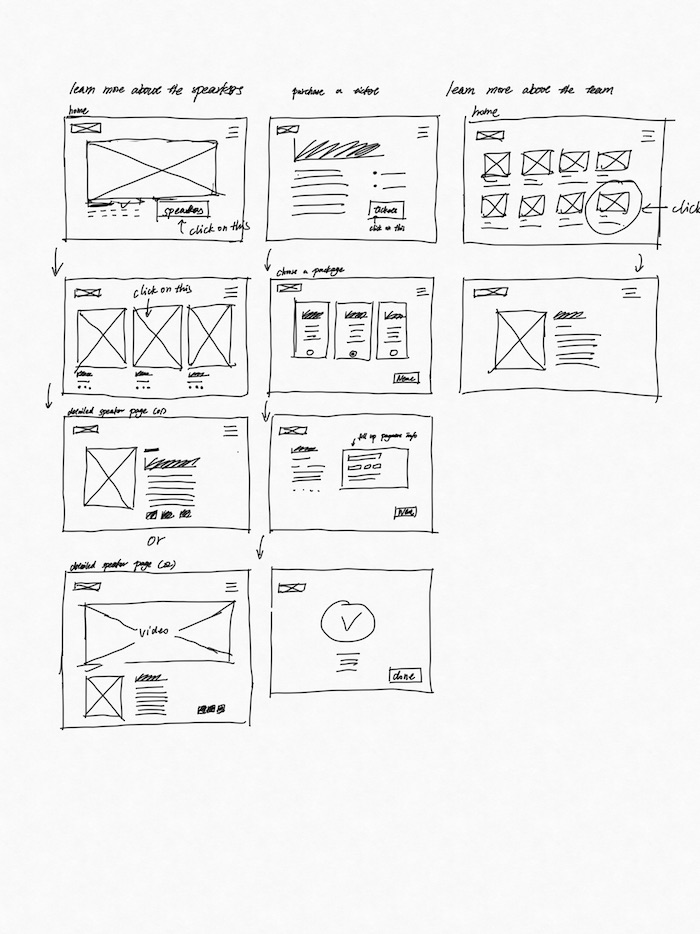

5 tasks
- Learn more about the speakers
- Purchase a ticket
- Learn more about the team
- Provide feedbacks
- Find contacts
5 user-flow wireframes sets (one set per task, minimum)
sketch 1
sketch 2

1 basic brand definition
TedxSFU is a volunteer run annual event under Tedx.
"At a TEDx event, TED Talks video and live speakers combine to spark deep discussion and connection. These local, self-organized events are branded TEDx, where x = independently organized TED event." (from tedx event page)
1 set of brand components